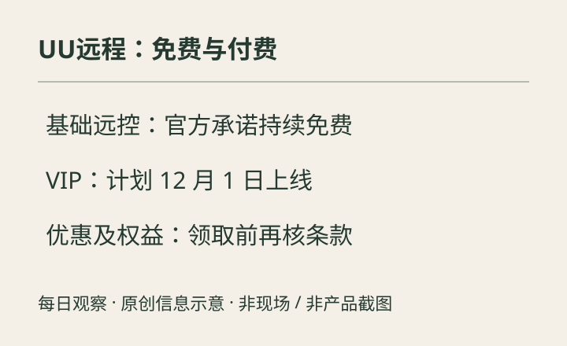

11月19日公告 · 服务计划12月1日上线
UU 远程预告12月上线会员，基础远控承诺继续免费
UU 远程的用户将面对新的免费与付费选择。官方11月19日公告称，VIP 服务计划于12月1日上线，基础远控将持续免费，且不限次数、不限时长、不排队、无广告；在该日期前注册成功的用户，可领取年卡五折优惠。官方说明 ↗
这是一项未来服务安排。官方把具体规则和权益清单指向客户端通知中心，公告本身没有列出完整套餐表。准备付费前，可以先逐项核对自己需要的画质、帧率或多屏功能归属，再确认优惠适用套餐、领取条件和续费价格。免费基础服务的承诺不涵盖全部进阶能力；本刊未购买或测试会员。
来源与日期
- uuyc.163.com ↗ · 2026-11-19（页面显示）